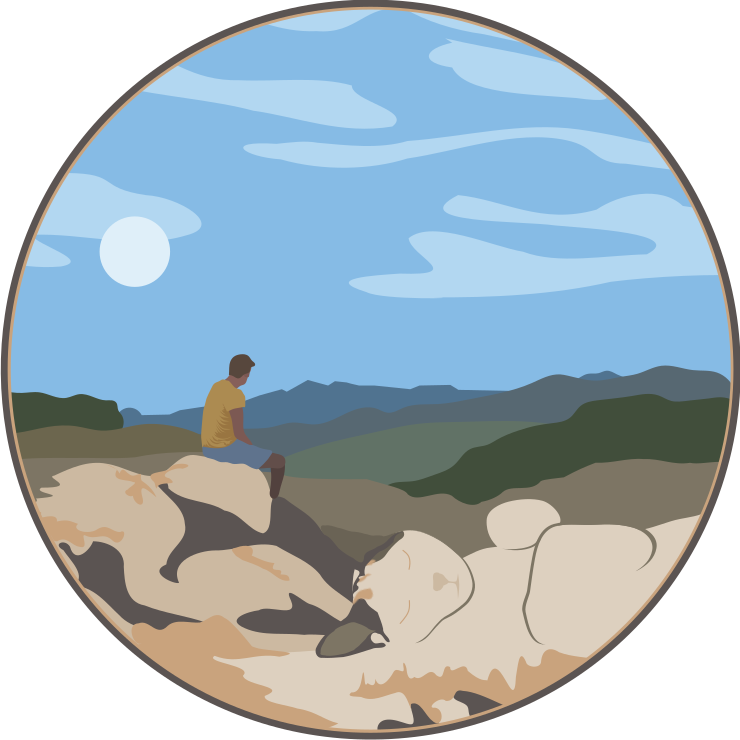

Started: 16th July 2025
Inspired by artist Lim Heng Swee who creates beautiful digital artworks of cats camouflaged as landscapes, I decided to use my relatively new Inkscape skills to combine a copy of my brother's cat with a recent photo of him in taken in the Lake District.
